ohun: optimizing sound event detection
Marcelo Araya-Salas, PhD
2023-06-02
Source:vignettes/ohun.Rmd
ohun.Rmdohun is intended to facilitate the automated detection of sound events, providing functions to diagnose and optimize detection routines. Detections from other software can also be explored and optimized.
The main features of the package are:
- The use of reference annotations for detection optimization and diagnostic
- The use of signal detection theory indices to evaluate detection performance
The package offers functions for:
- Curate references and acoustic data sets
- Diagnose detection performance
- Optimize detection routines based on reference annotations
- Energy-based detection
- Template-based detection
All functions allow the parallelization of tasks, which distributes the tasks among several processors to improve computational efficiency. The package works on sound files in ‘.wav’, ‘.mp3’, ‘.flac’ and ‘.wac’ format.
To install the latest developmental version from github you will need the R package remotes:
# install package
remotes::install_github("maRce10/ohun")
#load packages
library(ohun)
library(tuneR)
library(warbleR)Automatic sound event detection
Finding the position of sound events in a sound file is a challenging task. ohun offers two methods for automated sound event detection: template-based and energy-based detection. These methods are better suited for highly stereotyped or good signal-to-noise ratio (SNR) sounds, respectively. If the target sound events don’t fit these requirements, more elaborated methods (i.e. machine learning approaches) are warranted:
Still, a detection run using other software can be optimized with the tools provided in ohun.
Signal detection theory applied to bioacoustics
Broadly speaking, signal detection theory deals with the process of recovering signals (i.e. target signals) from background noise (not necessarily acoustic noise) and it’s widely used for optimizing this decision making process in the presence of uncertainty. During a detection routine, the detected ‘items’ can be classified into 4 classes:
- True positives (TPs): signals correctly identified as ‘signal’
- False positives (FPs): background noise incorrectly identified as ‘signal’
- False negatives (FNs): signals incorrectly identified as ‘background noise’
- True negatives (TNs): background noise correctly identified as ‘background noise’
Several additional indices derived from these indices are used to evaluate the performance of a detection routine. These are three useful indices in the context of sound event detection included in ohun:
- Recall: correct detections relative to total references (a.k.a. true positive rate or sensitivity; TPs / (TPs + FNs))
- Precision: correct detections relative to total detections (TPs / (TPs + FPs)).
- F score: combines recall and precision as the harmonic mean of these two, so it provides a single value for evaluating performance (a.k.a. F-measure or Dice similarity coefficient).
(Metrics that make use of ‘true negatives’ cannot be easily applied in the context of sound event detection as noise cannot always be partitioned in discrete units)
A perfect detection will have no false positives or false negatives, which will result in both recall and precision equal to 1. However, perfect detection cannot always be reached and some compromise between detecting all target signals plus some noise (recall = 1 & precision < 1) and detecting only target signals but not all of them (recall < 1 & precision = 1) is warranted. The right balance between these two extremes will be given by the relative costs of missing signals and mistaking noise for signals. Hence, these indices provide an useful framework for diagnosing and optimizing the performance of a detection routine.
The package ohun provides a set of tools to evaluate the performance of an sound event detection based on the indices described above. To accomplish this, the result of a detection routine is compared against a reference table containing the time position of all target sound events in the sound files. The package comes with an example reference table containing annotations of long-billed hermit hummingbird songs from two sound files (also supplied as example data: ‘lbh1’ and ‘lbh2’), which can be used to illustrate detection performance evaluation. The example data can be explored as follows:
# load example data
data("lbh1", "lbh2", "lbh_reference")
lbh_reference
[30mObject of class
[1m'selection_table'
[22m
[39m
[90m* The output of the following call:
[39m
[90m
[3mwarbleR::selection_table(X = lbh_reference)
[23m
[39m
[90m
[1m
Contains:
[22m
* A selection table data frame with 19 rows and 6 columns:
[39m
[90m|sound.files | selec| start| end| bottom.freq| top.freq|
[39m
[90m|:-----------|-----:|------:|------:|-----------:|--------:|
[39m
[90m|lbh2.wav | 1| 0.1092| 0.2482| 2.2954| 8.9382|
[39m
[90m|lbh2.wav | 2| 0.6549| 0.7887| 2.2954| 9.0426|
[39m
[90m|lbh2.wav | 3| 1.2658| 1.3856| 2.2606| 9.0774|
[39m
[90m|lbh2.wav | 4| 1.8697| 2.0053| 2.1911| 8.9035|
[39m
[90m|lbh2.wav | 5| 2.4418| 2.5809| 2.1563| 8.6600|
[39m
[90m|lbh2.wav | 6| 3.0368| 3.1689| 2.2259| 8.9382|
[39m
[90m... and 13 more row(s)
[39m
[90m
* A data frame (check.results) generated by check_sels() (as attribute)
[39m
[90mcreated by warbleR 1.1.27
[39mThis is a ‘selection table’, an object class provided by the package
warbleR (see selection_table()
for details). Selection tables are basically data frames in which the
contained information has been double-checked (using warbleR’s check_sels()).
But they behave pretty much as data frames and can be easily converted
to data frames:
# convert to data frame
as.data.frame(lbh_reference) sound.files selec start end bottom.freq top.freq
1 lbh2.wav 1 0.109161 0.2482449 2.2954 8.9382
2 lbh2.wav 2 0.654921 0.7887232 2.2954 9.0426
3 lbh2.wav 3 1.265850 1.3855678 2.2606 9.0774
4 lbh2.wav 4 1.869705 2.0052678 2.1911 8.9035
5 lbh2.wav 5 2.441769 2.5808529 2.1563 8.6600
6 lbh2.wav 6 3.036825 3.1688667 2.2259 8.9382
7 lbh2.wav 7 3.628617 3.7465742 2.3302 8.6252
8 lbh2.wav 8 4.153288 4.2818085 2.2954 8.4861
9 lbh2.wav 9 4.723673 4.8609963 2.3650 8.6948
10 lbh1.wav 10 0.088118 0.2360047 1.9824 8.4861
11 lbh1.wav 11 0.572290 0.7201767 2.0520 9.5295
12 lbh1.wav 12 1.056417 1.1972614 2.0868 8.4861
13 lbh1.wav 13 1.711338 1.8680274 1.9824 8.5905
14 lbh1.wav 14 2.190249 2.3416568 2.0520 8.5209
15 lbh1.wav 15 2.697143 2.8538324 1.9824 9.2513
16 lbh1.wav 16 3.181315 3.3344833 1.9129 8.4861
17 lbh1.wav 17 3.663719 3.8133662 1.8781 8.6948
18 lbh1.wav 18 4.140816 4.3045477 1.8433 9.2165
19 lbh1.wav 19 4.626712 4.7851620 1.8085 8.9035All ohun functions that
work with this kind of data can take both selection tables and data
frames. Spectrograms with highlighted sound events from a selection
table can be plotted with the function label_spectro()
(this function only plots one wave object at the time):
# save sound file
writeWave(lbh1, file.path(tempdir(), "lbh1.wav"))
# save sound file
writeWave(lbh2, file.path(tempdir(), "lbh2.wav"))
# print spectrogram
label_spectro(wave = lbh1, reference = lbh_reference[lbh_reference$sound.files == "lbh1.wav", ], hop.size = 10, ovlp = 50, flim = c(1, 10))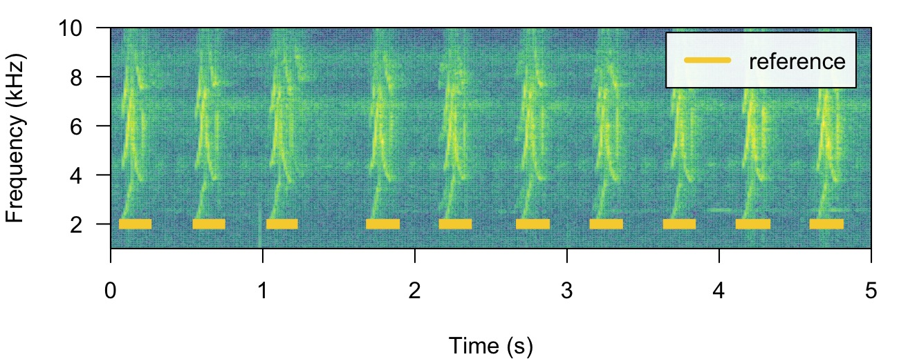
# print spectrogram
label_spectro(wave = lbh2, reference = lbh_reference[lbh_reference$sound.files == "lbh2.wav", ], hop.size = 10, ovlp = 50, flim = c(1, 10))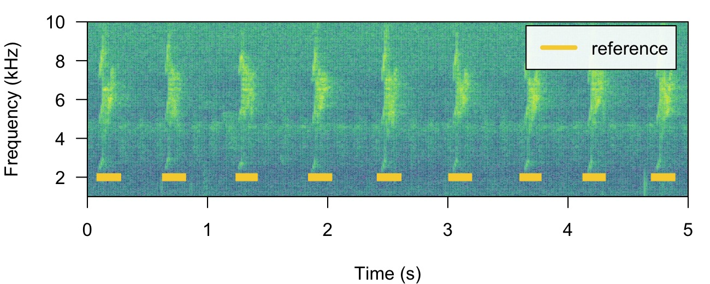
The function diagnose_detection() evaluates the
performance of a detection routine by comparing it to a reference table.
For instance, a perfect detection is given by comparing
lbh_reference to itself:
lbh1_reference <-
lbh_reference[lbh_reference$sound.files == "lbh1.wav",]
# diagnose
diagnose_detection(reference = lbh1_reference, detection = lbh1_reference)[, c(1:3, 7:9)] detections true.positives false.positives overlap recall precision
1 10 10 0 1 1 1We will work mostly with a single sound file for convenience but the functions can work on several sound files at the time. The files should be found in a single working directory. Although the above example is a bit silly, it shows the basic diagnostic indices, which include basic detection theory indices (‘true.positives’, ‘false.positives’, ‘false.negatives’, ‘recall’ and ‘precision’) mentioned above. We can play around with the reference table to see how these indices can be used to spot imperfect detection routines (and hopefully improve them!). For instance, we can remove some sound events to see how this is reflected in the diagnostics. Getting rid of some rows in ‘detection’, simulating a detection with some false negatives, will affect the recall but not the precision:
# create new table
lbh1_detection <- lbh1_reference[3:9,]
# print spectrogram
label_spectro(
wave = lbh1,
reference = lbh1_reference,
detection = lbh1_detection,
hop.size = 10,
ovlp = 50,
flim = c(1, 10)
)
# diagnose
diagnose_detection(reference = lbh1_reference, detection = lbh1_detection)[, c(1:3, 7:9)] detections true.positives false.positives overlap recall precision
1 7 7 0 1 0.7 1Having some additional sound events not in reference will do the opposite, reducing precision but not recall. We can do this simply by switching the tables:
# print spectrogram
label_spectro(
wave = lbh1,
detection = lbh1_reference,
reference = lbh1_detection,
hop.size = 10,
ovlp = 50,
flim = c(1, 10)
)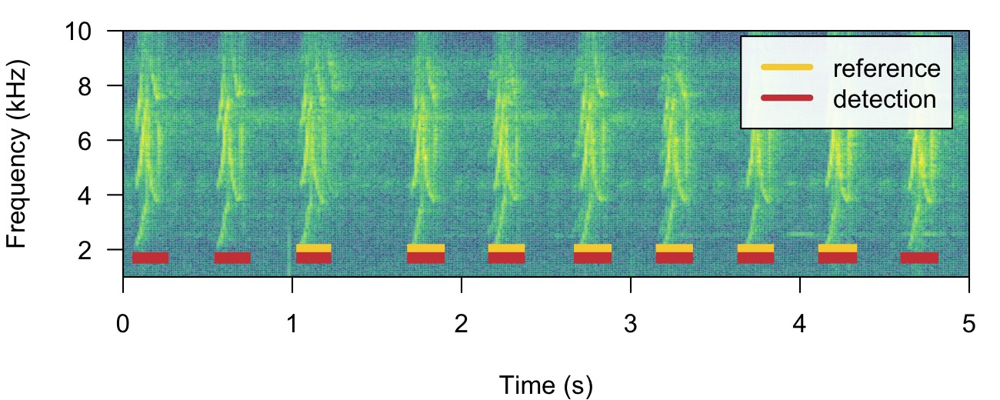
# diagnose
diagnose_detection(reference = lbh1_detection, detection = lbh1_reference)[, c(1:3, 7:9)] detections true.positives false.positives overlap recall precision
1 10 7 3 1 1 0.7The function offers three additional diagnose metrics:
-
Splits: detections that share overlapping reference
sounds with other detections
- Merges: detections that overlap with two or more reference sounds
- Proportional overlap of true positives: ratio of the time overlap of true positives with its corresponding sound event in the reference table
In a perfect detection routine split and merged positives should be 0 while proportional overlap should be 1. We can shift the start of sound events a bit to reflect a detection in which there is some mismatch to the reference table regarding to the time location of sound events:
# create new table
lbh1_detection <- lbh1_reference
# add 'noise' to start
set.seed(18)
lbh1_detection$start <-
lbh1_detection$start + rnorm(nrow(lbh1_detection), mean = 0, sd = 0.1)
## print spectrogram
label_spectro(
wave = lbh1,
reference = lbh1_reference,
detection = lbh1_detection,
hop.size = 10,
ovlp = 50,
flim = c(1, 10)
)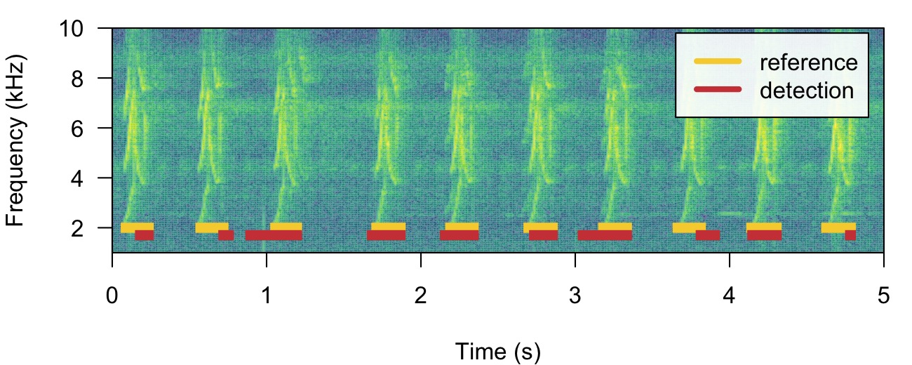
# diagnose
diagnose_detection(reference = lbh1_reference, detection = lbh1_detection) detections true.positives false.positives false.negatives splits merges overlap
1 10 5 5 5 0 0 0.7849767
recall precision f.score
1 0.5 0.5 0.5In addition, the following diagnostics related to the duration of the
sound events can also be returned by setting
time.diagnostics = TRUE. Here we tweak the reference and
detection data just to have some false positives and false
negatives:
# diagnose with time diagnostics
diagnose_detection(reference = lbh1_reference[-1, ], detection = lbh1_detection[-10, ], time.diagnostics = TRUE) detections true.positives false.positives false.negatives splits merges
1 9 5 4 4 0 0
mean.duration.true.positives mean.duration.false.positives
1 187 58
mean.duration.false.negatives overlap proportional.duration.true.positives recall
1 149 0.7849767 1.194993 0.5555556
precision f.score
1 0.5555556 0.5555556These additional metrics can be used to further filter out undesired
sound events based on their duration (for instance in a energy-based
detection as in energy_detector(), explained below).
Diagnostics can also be detailed by sound file:
# diagnose by sound file
diagnostic <-
diagnose_detection(reference = lbh1_reference,
detection = lbh1_detection,
by.sound.file = TRUE)
diagnostic sound.files detections true.positives false.positives false.negatives splits merges
1 lbh1.wav 10 5 5 5 0 0
overlap recall precision f.score
1 0.7849767 0.5 0.5 0.5These diagnostics can be summarized (as in the default
diagnose_detection() output) with the function
summarize_diagnostic():
# summarize
summarize_diagnostic(diagnostic) detections true.positives false.positives false.negatives splits merges overlap
1 10 5 5 5 0 0 0.7849767
recall precision f.score
1 0.5 0.5 0.5Detecting sound events with ohun
Energy-based detection
This detector uses amplitude envelopes to infer the position of sound
events. Amplitude envelopes are representations of the variation in
energy through time. The following code plots an amplitude envelope
along with the spectrogram for the example data lbh1:
# plot spectrogram and envelope
label_spectro(
wave = cutw(
lbh1,
from = 0,
to = 1.5,
output = "Wave"
),
ovlp = 90,
hop.size = 10,
flim = c(0, 10),
envelope = TRUE
)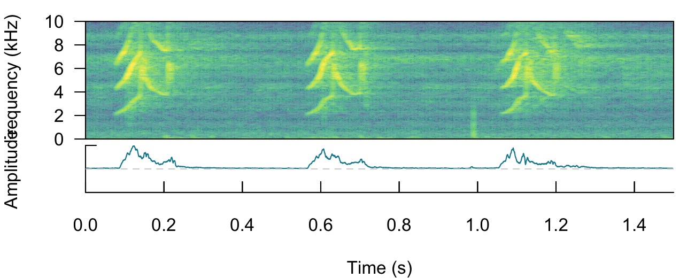
This type of detector doesn’t require highly stereotyped sound
events, although they work better on high quality recordings in which
the amplitude of target sound events is higher than the background noise
(i.e. high signal-to-noise ratio). The function
ernergy_detector() performs this type of detection.
How it works
We can understand how to use ernergy_detector() using
simulated sound events. We will do that using the function
simulate_songs() from warbleR. In this
example we simulate a recording with 10 sounds with two different
frequency ranges and durations:
# install this package first if not installed
# install.packages("Sim.DiffProc")
#Creating vector for duration
durs <- rep(c(0.3, 1), 5)
#Creating simulated song
set.seed(12)
simulated_1 <-
warbleR::simulate_songs(
n = 10,
durs = durs,
freqs = 5,
sig2 = 0.01,
gaps = 0.5,
harms = 1,
bgn = 0.1,
path = tempdir(),
file.name = "simulated_1",
selec.table = TRUE,
shape = "cos",
fin = 0.3,
fout = 0.35,
samp.rate = 18
)$waveThe function call saves a ‘.wav’ sound file in a temporary directory
(tempdir()) and also returns a wave object in
the R environment. This outputs will be used to run energy-based
detection and creating plots, respectively. This is how the spectrogram
and amplitude envelope of the simulated recording look like:
# plot spectrogram and envelope
label_spectro(wave = simulated_1,
env = TRUE,
fastdisp = TRUE)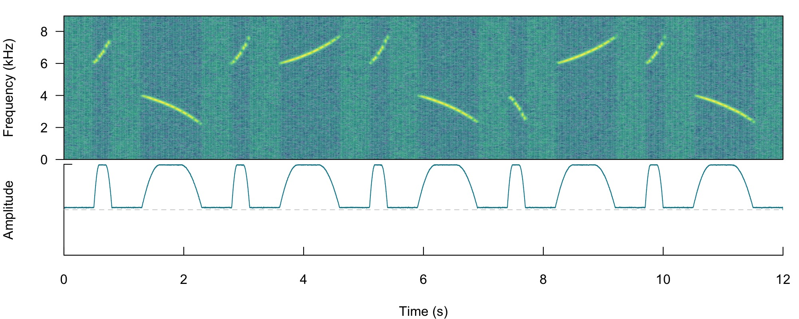
Note that the amplitude envelope shows a high signal-to-noise ratio
of the sound events, which is ideal for energy-based detection. This can
be conducted using ernergy_detector() as follows:
# run detection
detection <-
energy_detector(
files = "simulated_1.wav",
bp = c(2, 8),
threshold = 50,
smooth = 150,
path = tempdir()
)
# plot spectrogram and envelope
label_spectro(
wave = simulated_1,
envelope = TRUE,
detection = detection,
threshold = 50
)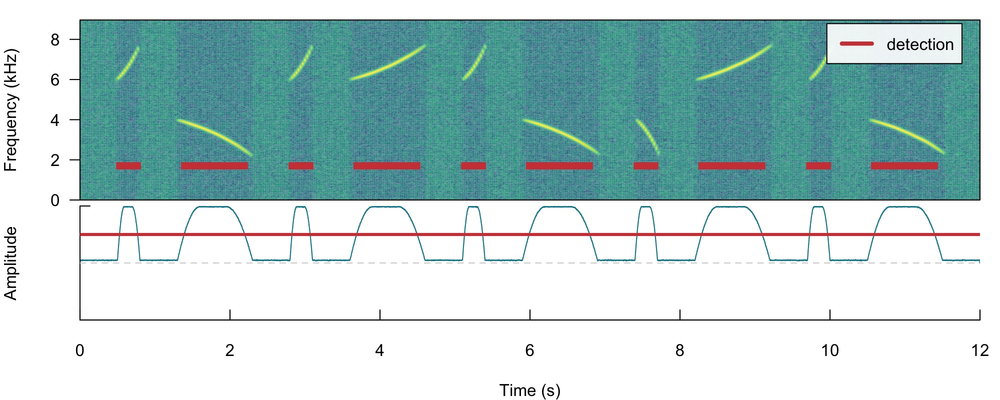
The output is a selection table:
detection
[30mObject of class
[1m'selection_table'
[22m
[39m
[90m* The output of the following call:
[39m
[90m
[3menergy_detector(files = "simulated_1.wav", path = tempdir(),
[23m
[39m
[90m
[3mbp = c(2, 8), smooth = 150, threshold = 50)
[23m
[39m
[90m
[1m
Contains:
[22m
* A selection table data frame with 10 rows and 5 columns:
[39m
[90m|sound.files | duration| selec| start| end|
[39m
[90m|:---------------|--------:|-----:|------:|------:|
[39m
[90m|simulated_1.wav | 0.2328| 1| 0.5309| 0.7638|
[39m
[90m|simulated_1.wav | 0.7947| 2| 1.3955| 2.1901|
[39m
[90m|simulated_1.wav | 0.2334| 3| 2.8308| 3.0642|
[39m
[90m|simulated_1.wav | 0.7944| 4| 3.6955| 4.4899|
[39m
[90m|simulated_1.wav | 0.2333| 5| 5.1307| 5.3641|
[39m
[90m|simulated_1.wav | 0.7945| 6| 5.9956| 6.7901|
[39m
[90m... and 4 more row(s)
[39m
[90m
* A data frame (check.results) generated by check_sels() (as attribute)
[39m
[90mcreated by warbleR 1.1.28
[39mNow we will make use of some additional arguments to filter out
specific sound events based on their structural features. For instance
we can use the argument minimum.duration to provide a time
treshold (in ms) to exclude short sound events and keep only the longest
sound events:
# run detection
detection <-
energy_detector(
files = "simulated_1.wav",
bp = c(1, 8),
threshold = 50,
min.duration = 500,
smooth = 150,
path = tempdir()
)
# plot spectrogram
label_spectro(wave = simulated_1, detection = detection)We can use the argument max.duration (also in ms) to
exclude long sound events and keep the short ones:
# run detection
detection <- energy_detector(files = "simulated_1.wav", bp = c(1, 8), threshold = 50, smooth = 150, max.duration = 500, path = tempdir())
# plot spectrogram
label_spectro(wave = simulated_1, detection = detection)We can also focus the detection on specific frequency ranges using
the argument bp (bandpass). By setting
bp = c(5, 8) only those sound events found within that
frequency range (5-8 kHz) will be detected, which excludes sound events
below 5 kHz:
# Detecting
detection <- energy_detector(files = "simulated_1.wav", bp = c(5, 8), threshold = 50, smooth = 150, path = tempdir())
# plot spectrogram
label_spectro(wave = simulated_1, detection = detection)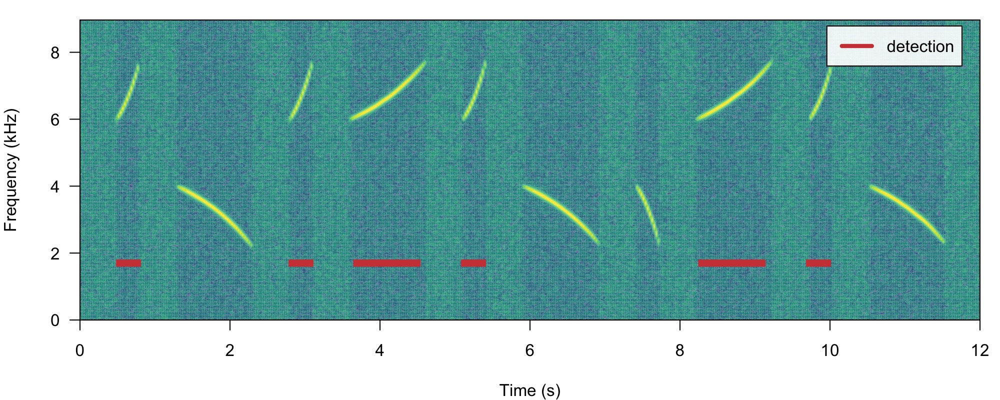
The same logic can be applied to detect those sound events found
below 5 kHz. We just need to set the upper bound of the band pass filter
below the range of the higher frequency sound events (for instance
bp = (0, 6)):
# Detect
detection <-
energy_detector(
files = "simulated_1.wav",
bp = c(0, 6),
threshold = 50,
min.duration = 1,
smooth = 150,
path = tempdir()
)
# plot spectrogram
label_spectro(wave = simulated_1, detection = detection)Amplitude modulation (variation in amplitude across a sound event)
can be problematic for detection based on amplitude envelopes. We can
also simulate some amplitude modulation using
warbleR::simulate_songs():
#Creating simulated song
set.seed(12)
#Creating vector for duration
durs <- rep(c(0.3, 1), 5)
sim_2 <-
sim_songs(
n = 10,
durs = durs,
freqs = 5,
sig2 = 0.01,
gaps = 0.5,
harms = 1,
bgn = 0.1,
path = tempdir(),
file.name = "simulated_2",
selec.table = TRUE,
shape = "cos",
fin = 0.3,
fout = 0.35,
samp.rate = 18,
am.amps = c(1, 2, 3, 2, 0.1, 2, 3, 3, 2, 1)
)
# extract wave object and selection table
simulated_2 <- sim_2$wave
sim2_sel_table <- sim_2$selec.table
# plot spectrogram
label_spectro(wave = simulated_2, envelope = TRUE)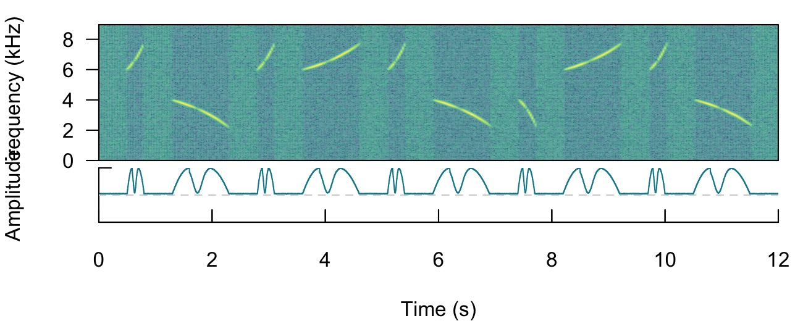
When sound events have strong amplitude modulation they can be split during detection:
# detect sounds
detection <- energy_detector(files = "simulated_2.wav", threshold = 50, path = tempdir())
# plot spectrogram
label_spectro(wave = simulated_2, envelope = TRUE, threshold = 50, detection = detection)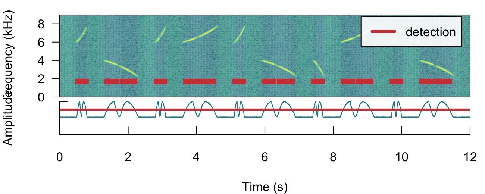
There are two arguments that can deal with this:
holdtime and smooth. hold.time
allows to merge split sound events that are found within a given time
range (in ms). This time range should be high enough to merge things
belonging to the same sound event but not too high so it merges
different sound events. For this example a hold.time of 200
ms can do the trick (we know gaps between sound events are ~0.5 s
long):
# detect sounds
detection <-
energy_detector(
files = "simulated_2.wav",
threshold = 50,
min.duration = 1,
path = tempdir(),
hold.time = 200
)
# plot spectrogram
label_spectro(
wave = simulated_2,
envelope = TRUE,
threshold = 50,
detection = detection
)smooth works by merging the amplitude envelope ‘hills’
of the split sound events themselves. It smooths envelopes by applying a
sliding window averaging of amplitude values. It’s given in ms of the
window size. A smooth of 350 ms can merged back split sound
events from our example:
# detect sounds
detection <-
energy_detector(
files = "simulated_2.wav",
threshold = 50,
min.duration = 1,
path = tempdir(),
smooth = 350
)
# plot spectrogram
label_spectro(
wave = simulated_2,
envelope = TRUE,
threshold = 50,
detection = detection,
smooth = 350
)The function has some additional arguments for further filtering
detections (peak.amplitude) and speeding up analysis
(thinning and parallel).
Optimizing energy-based detection
This last example using smooth can be used to showcase
how the tunning parameters can be optimized. As explained above, to do
this we need a reference table that contains the time position of the
target sound events. The function
optimize_energy_detector() can be used finding the optimal
parameter values. We must provide the range of parameter values that
will be evaluated:
optim_detection <-
optimize_energy_detector(
reference = sim2_sel_table,
files = "simulated_2.wav",
threshold = 50,
min.duration = 1,
path = tempdir(),
smooth = c(100, 250, 350)
)3 combinations will be evaluated:
optim_detection[, c(1, 2:5, 7:12, 17:18)] threshold peak.amplitude smooth hold.time min.duration thinning detections
1 50 0 100 0 1 1 20
2 50 0 250 0 1 1 15
3 50 0 350 0 1 1 10
true.positives false.positives false.negatives splits overlap
1 0 20 10 0 NA
2 5 10 5 0 0.5024838
3 10 0 0 0 0.7219441
proportional.duration.true.positives
1 NA
2 0.5024838
3 0.7840549The output contains the combination of parameters used at each
iteration as well as the corresponding diagnose indices. In this case
all combinations generate a good detection (recall & precision = 1).
However, only the routine with the highest smooth (last
row) has no split sound events (‘split.positive’ column). It also shows
a better overlap to the reference sound events (‘overlap’ closer to
1).
In addition, there are two complementary functions for optimizing
energy-based detection routines: feature_reference() and
merge_overlaps(). feature_reference() allow
user to get a sense of the time and frequency characteristics of a
reference table. This information can be used to determine the range of
tuning parameter values during optimization. This is the output of the
function applied to lbh_reference:
feature_reference(reference = lbh_reference, path = tempdir()) min mean max
sel.duration 117.96 142.60 163.73
gap.duration 624.97 680.92 811.61
annotations 9.00 9.50 10.00
duty.cycle 0.24 0.27 0.31
peak.amplitude 73.76 81.58 88.03
bottom.freq 1.81 2.11 2.37
top.freq 8.49 8.82 9.53Features related to selection duration can be used to set the ‘max.duration’ and ‘min.duration’ values, frequency related features can inform banpass values, gap related features inform hold time values and duty cycle can be used to evaluate performance. Peak amplitude can be used to keep only those sound events with the highest intensity, mostly useful for routines in which only a subset of the target sound events present in the recordings is needed.
merge_overlaps() finds time-overlapping selections in
reference tables and collapses them into a single selection. Overlapping
selections would more likely appear as a single amplitude ‘hill’ and
thus would be detected as a single sound event. So
merge_overlaps() can be useful to prepare references in a
format representing a more realistic expectation of how a pefect energy
detection routine would look like.
Template-based detection
This detection method is better suited for highly stereotyped sound events. As it doesn’t depend on the signal-to-noise ratio it’s more robust to higher levels of background noise. The procedure is divided in three steps:
- Choosing the right template (
get_templates()) - Estimating the cross-correlation scores of templates along sound
files (
template_correlator())
- Detecting sound events by applying a correlation threshold
(
template_detector())
The function get_templates() can help you find a
template closer to the average acoustic structure of the sound events in
a reference table. This is done by finding the sound events closer to
the centroid of the acoustic space. When the acoustic space is not
supplied (‘acoustic.space’ argument) the function estimates it by
measuring several acoustic parameters using the function spectro_analysis()
from warbleR)
and summarizing it with Principal Component Analysis (after
z-transforming parameters). If only 1 template is required the function
returns the sound event closest to the acoustic space centroid. The
rationale here is that a sound event closest to the average sound event
structure is more likely to share structural features with most sounds
across the acoustic space than a sound event in the periphery of the
space. These ‘mean structure’ templates can be obtained as follows:
# get mean structure template
template <-
get_templates(reference = lbh1_reference, path = tempdir())
[90mThe first 2 principal components explained 0.53 of the variance
[39m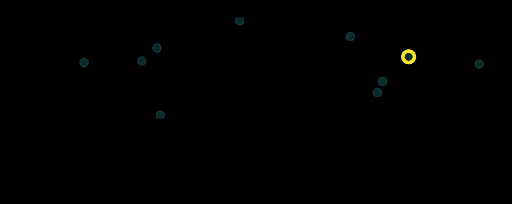
The graph above shows the overall acoustic spaces, in which the sound
closest to the space centroid is highlighted. The highlighted sound is
selected as the template and can be used to detect similar sound events.
The function get_templates() can also select several
templates. This can be helpful when working with sounds that are just
moderately stereotyped. This is done by dividing the acoustic space into
sub-spaces defined as equal-size slices of a circle centered at the
centroid of the acoustic space:
# get 3 templates
get_templates(reference = lbh_reference,
n.sub.spaces = 3, path = tempdir())
[90mThe first 2 principal components explained 0.68 of the variance
[39m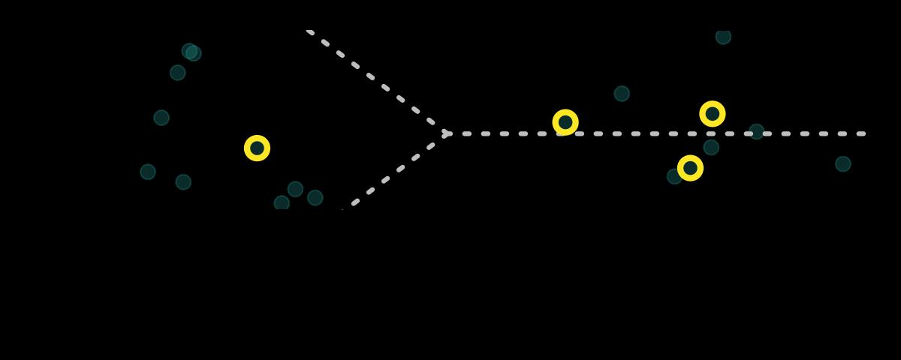
We will use the single template object (‘template’) to run a detection on the example ‘lbh1’ data:
# get correlations
correlations <-
template_correlator(templates = template,
files = "lbh1.wav",
path = tempdir())The output is an object of class ‘template_correlations’, with its own printing method:
# print
correlations
[30mObject of class
[1m'template_correlations'
[22m
[39m
[90m* The output of the following
[3mtemplate_correlator()
[23m call:
[39m
[90m
[3mtemplate_correlator(templates = template, files = "lbh1.wav",
[23m
[39m
[90m
[3mpath = tempdir())
[23m
[39m
[90m* Contains 1 correlation score vector(s) from 1 template(s):
[3mlbh1.wav-16
[23m
[39m
[90m
... and 1 sound files(s):
[3mlbh1.wav
[23m
[39m
[90m
* Created by
[1mohun
[22m0.1.1
[39mThis object can then be used to detect sound events using
template_detector():
# run detection
detection <-
template_detector(template.correlations = correlations, threshold = 0.4)
detection
[30mObject of class
[1m'selection_table'
[22m
[39m
[90m* The output of the following call:
[39m
[90m
[3mtemplate_detector(template.correlations = correlations, threshold = 0.4)
[23m
[39m
[90m
[1m
Contains:
[22m
* A selection table data frame with 16 rows and 6 columns:
[39m
[90m|sound.files | selec| start| end|template | scores|
[39m
[90m|:-----------|-----:|------:|------:|:-----------|------:|
[39m
[90m|lbh1.wav | 1| 0.0816| 0.2347|lbh1.wav-16 | 0.7158|
[39m
[90m|lbh1.wav | 2| 0.5709| 0.7241|lbh1.wav-16 | 0.7246|
[39m
[90m|lbh1.wav | 3| 1.0602| 1.2134|lbh1.wav-16 | 0.6442|
[39m
[90m|lbh1.wav | 4| 1.1302| 1.2833|lbh1.wav-16 | 0.4265|
[39m
[90m|lbh1.wav | 5| 1.3399| 1.4930|lbh1.wav-16 | 0.4010|
[39m
[90m|lbh1.wav | 6| 1.7127| 1.8659|lbh1.wav-16 | 0.7724|
[39m
[90m... and 10 more row(s)
[39m
[90m
* A data frame (check.results) generated by check_sels() (as attribute)
[39m
[90mcreated by warbleR 1.1.28
[39mThe output can be explored by plotting the spectrogram along with the detection and correlation scores:
# plot spectrogram
label_spectro(
wave = lbh1,
detection = detection,
template.correlation = correlations[[1]],
flim = c(0, 10),
threshold = 0.4,
hop.size = 10, ovlp = 50)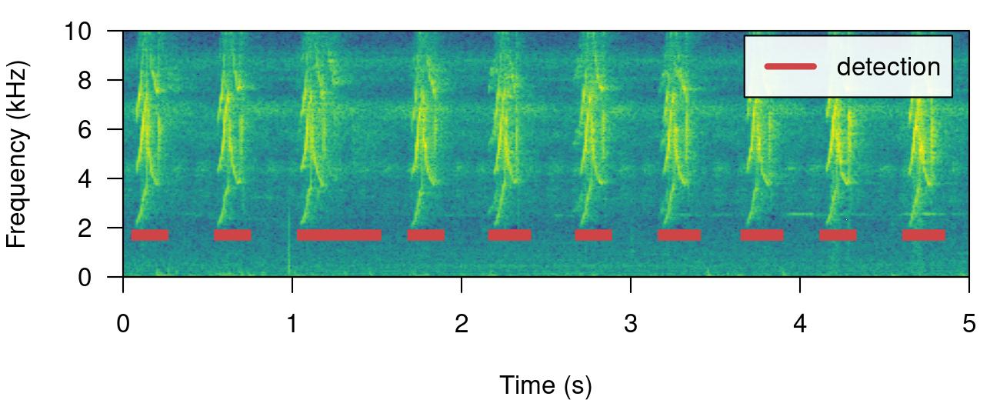
The performance can be evaluated using
diagnose_detection():
#diagnose
diagnose_detection(reference = lbh1_reference, detection = detection) detections true.positives false.positives false.negatives splits merges overlap recall
1 16 10 6 0 6 0 0.917444 1
precision f.score
1 0.625 0.7692308Optimizing template-based detection
The function optimize_template_detector() allows to
evaluate the performance under different correlation thresholds:
# run optimization
optimization <-
optimize_template_detector(
template.correlations = correlations,
reference = lbh1_reference,
threshold = seq(0.1, 0.5, 0.1)
)5 thresholds will be evaluated:
# print output
optimization threshold templates detections true.positives false.positives false.negatives splits
1 0.1 lbh1.wav-16 97 10 87 0 13
2 0.2 lbh1.wav-16 72 10 62 0 13
3 0.3 lbh1.wav-16 35 10 25 0 12
4 0.4 lbh1.wav-16 16 10 6 0 6
5 0.5 lbh1.wav-16 10 10 0 0 0
merges overlap recall precision f.score
1 0 0.917444 1 0.1030928 0.1869159
2 0 0.917444 1 0.1388889 0.2439024
3 0 0.917444 1 0.2857143 0.4444444
4 0 0.917444 1 0.6250000 0.7692308
5 0 0.917444 1 1.0000000 1.0000000Additional threshold values can be evaluated without having to run it
all over again. We just need to supplied the output from the previous
run with the argument previous.output (the same trick can
be done when optimizing an energy-based detection):
# run optimization
optimize_template_detector(
template.correlations = correlations,
reference = lbh1_reference,
threshold = c(0.6, 0.7),
previous.output = optimization
)2 thresholds will be evaluated: threshold templates detections true.positives false.positives false.negatives splits
1 0.1 lbh1.wav-16 97 10 87 0 13
2 0.2 lbh1.wav-16 72 10 62 0 13
3 0.3 lbh1.wav-16 35 10 25 0 12
4 0.4 lbh1.wav-16 16 10 6 0 6
5 0.5 lbh1.wav-16 10 10 0 0 0
6 0.6 lbh1.wav-16 10 10 0 0 0
7 0.7 lbh1.wav-16 7 7 0 3 0
merges overlap recall precision f.score
1 0 0.9174440 1.0 0.1030928 0.1869159
2 0 0.9174440 1.0 0.1388889 0.2439024
3 0 0.9174440 1.0 0.2857143 0.4444444
4 0 0.9174440 1.0 0.6250000 0.7692308
5 0 0.9174440 1.0 1.0000000 1.0000000
6 0 0.9174440 1.0 1.0000000 1.0000000
7 0 0.9113717 0.7 1.0000000 0.8235294In this case several threshold values can achieved an optimal detection.
Detecting several templates
Several templates can be used within the same call. Here we correlate two templates on the two example sound files, taking one template from each sound file:
# get correlations
correlations <-
template_correlator(
templates = lbh_reference[c(1, 10),],
files = c("lbh1.wav", "lbh2.wav"),
path = tempdir()
)
# run detection
detection <-
template_detector(template.correlations = correlations, threshold = 0.5)
correlations <-
template_correlator(
templates = lbh_reference[c(1, 10),],
files = c("lbh1.wav", "lbh2.wav"),
path = tempdir()
)Note that in these cases we can get the same sound event detected several times (duplicates), one by each template. We can check if that is the case just by diagnosing the detection:
#diagnose
diagnose_detection(reference = lbh_reference, detection = detection) detections true.positives false.positives false.negatives splits merges overlap
1 23 15 8 4 0 0 0.8847399
recall precision f.score
1 0.7894737 0.6521739 0.7142857Duplicates are shown as split positives. Fortunately, we can leave a
single detected sound event by leaving only those with the highest
correlation. To do this we first need to label each row in the detection
using label_detection() and then remove duplicates using
filter_detection():
# labeling detection
labeled <-
label_detection(reference = lbh_reference, detection = detection)Warning: Rows in 'detection' with missing values in start and/or end were removedThis function adds a column (‘detection.class’) with the class label for each row:
table(labeled$detection.class)
false.positive true.positive
8 15 Now we can filter out duplicates and diagnose the detection again,
telling the function to select a single row per duplicate using the
correlation score as a criterium (by = "scores", this
column is part of the template_detector() output):
# filter
filtered <- filter_detection(detection = labeled, by = "scores")
# diagnose
diagnose_detection(reference = lbh_reference, detection = filtered) detections true.positives false.positives false.negatives splits merges overlap recall
1 8 0 8 19 0 0 NA 0
precision f.score
1 0 NAWe successfully get rid of duplicates and detected every single target sound event.
Improving detection speed
Detection routines can take a long time when working with large amounts of acoustic data (e.g. large sound files and/or many sound files). These are some useful points to keep in mine when trying to make a routine more time-efficient:
- Always test procedures on small data subsets
-
template_detector()is faster thanenergy_detector() - Parallelization (see
parallelargument in most functions) can significantly speed-up routines, but works better on Unix-based operating systems (linux and mac OS) - Sampling rate matters: detecting sound events on low sampling rate
files goes faster, so we should avoid having nyquist frequencies
(sampling rate / 2) way higher than the highest frequency of the target
sound events (sound files can be downsampled using warbleR’s
fix_sound_files()) - Large sound files can make the routine crash, use
split_acoustic_data()to split both reference tables and files into shorter clips. - Think about using a computer with lots of RAM memory or a computer cluster for working on large amounts of data
-
thinningargument (which reduces the size of the amplitude envelope) can also speed-upenergy_detector()
Additional tips
- Use your knowledge about the sound event structure to determine the initial range for the tuning parameters in a detection optimization routine
- If people have a hard time figuring out where a target sound event occurs in a recording, detection algorithms will also have a hard time
- Several templates representing the range of variation in sound event structure can be used to detect semi-stereotyped sound events
- Make sure reference tables contain all target sound events and only the target sound events. The performance of the detection cannot be better than the reference itself.
- Avoid having overlapping sound events or several sound events as a single one (like a multi-syllable vocalization) in the reference table when running an energy-based detector
- Low-precision can be improved by training a classification model (e.g. random forest) to tell sound events from noise
Please cite ohun like this:
Araya-Salas, M. (2021), ohun: diagnosing and optimizing automated sound event detection. R package version 0.1.0.
References
- Araya-Salas, M. (2021), ohun: diagnosing and optimizing automated sound event detection. R package version 0.1.0.
- Araya-Salas M, Smith-Vidaurre G (2017) warbleR: An R package to streamline analysis of animal sound events. Methods Ecol Evol 8:184-191.
- Khanna H., Gaunt S.L.L. & McCallum D.A. (1997). Digital spectrographic cross-correlation: tests of sensitivity. Bioacoustics 7(3): 209-234.
- Knight, E.C., Hannah, K.C., Foley, G.J., Scott, C.D., Brigham, R.M. & Bayne, E. (2017). Recommendations for acoustic recognizer performance assessment with application to five common automated signal recognition programs. Avian Conservation and Ecology,
- Macmillan, N. A., & Creelman, C.D. (2004). Detection theory: A user’s guide. Psychology press.
Session information
R version 4.3.0 (2023-04-21)
Platform: x86_64-pc-linux-gnu (64-bit)
Running under: Ubuntu 22.04.2 LTS
Matrix products: default
BLAS: /usr/lib/x86_64-linux-gnu/openblas-pthread/libblas.so.3
LAPACK: /usr/lib/x86_64-linux-gnu/openblas-pthread/libopenblasp-r0.3.20.so; LAPACK version 3.10.0
locale:
[1] LC_CTYPE=C.UTF-8 LC_NUMERIC=C LC_TIME=C.UTF-8
[4] LC_COLLATE=C.UTF-8 LC_MONETARY=C.UTF-8 LC_MESSAGES=C.UTF-8
[7] LC_PAPER=C.UTF-8 LC_NAME=C LC_ADDRESS=C
[10] LC_TELEPHONE=C LC_MEASUREMENT=C.UTF-8 LC_IDENTIFICATION=C
time zone: UTC
tzcode source: system (glibc)
attached base packages:
[1] stats graphics grDevices utils datasets methods base
other attached packages:
[1] warbleR_1.1.28 NatureSounds_1.0.4 knitr_1.43 seewave_2.2.0
[5] tuneR_1.4.4 ohun_0.1.1
loaded via a namespace (and not attached):
[1] gtable_0.3.3 rjson_0.2.21 xfun_0.39 bslib_0.4.2
[5] ggplot2_3.4.2 vctrs_0.6.2 tools_4.3.0 bitops_1.0-7
[9] parallel_4.3.0 tibble_3.2.1 proxy_0.4-27 fansi_1.0.4
[13] highr_0.10 pkgconfig_2.0.3 KernSmooth_2.23-20 desc_1.4.2
[17] lifecycle_1.0.3 compiler_4.3.0 stringr_1.5.0 textshaping_0.3.6
[21] munsell_0.5.0 htmltools_0.5.5 class_7.3-21 sass_0.4.6
[25] RCurl_1.98-1.12 yaml_2.3.7 pkgdown_2.0.7 pillar_1.9.0
[29] crayon_1.5.2 jquerylib_0.1.4 MASS_7.3-58.4 classInt_0.4-9
[33] cachem_1.0.8 viridis_0.6.3 Deriv_4.1.3 digest_0.6.31
[37] stringi_1.7.12 sf_1.0-13 purrr_1.0.1 rprojroot_2.0.3
[41] fastmap_1.1.1 grid_4.3.0 colorspace_2.1-0 cli_3.6.1
[45] magrittr_2.0.3 utf8_1.2.3 e1071_1.7-13 scales_1.2.1
[49] rmarkdown_2.22 Sim.DiffProc_4.8 signal_0.7-7 igraph_1.4.3
[53] gridExtra_2.3 ragg_1.2.5 memoise_2.0.1 pbapply_1.7-0
[57] evaluate_0.21 dtw_1.23-1 fftw_1.0-7 viridisLite_0.4.2
[61] rlang_1.1.1 Rcpp_1.0.10 glue_1.6.2 DBI_1.1.3
[65] jsonlite_1.8.4 R6_2.5.1 systemfonts_1.0.4 fs_1.6.2
[69] units_0.8-2